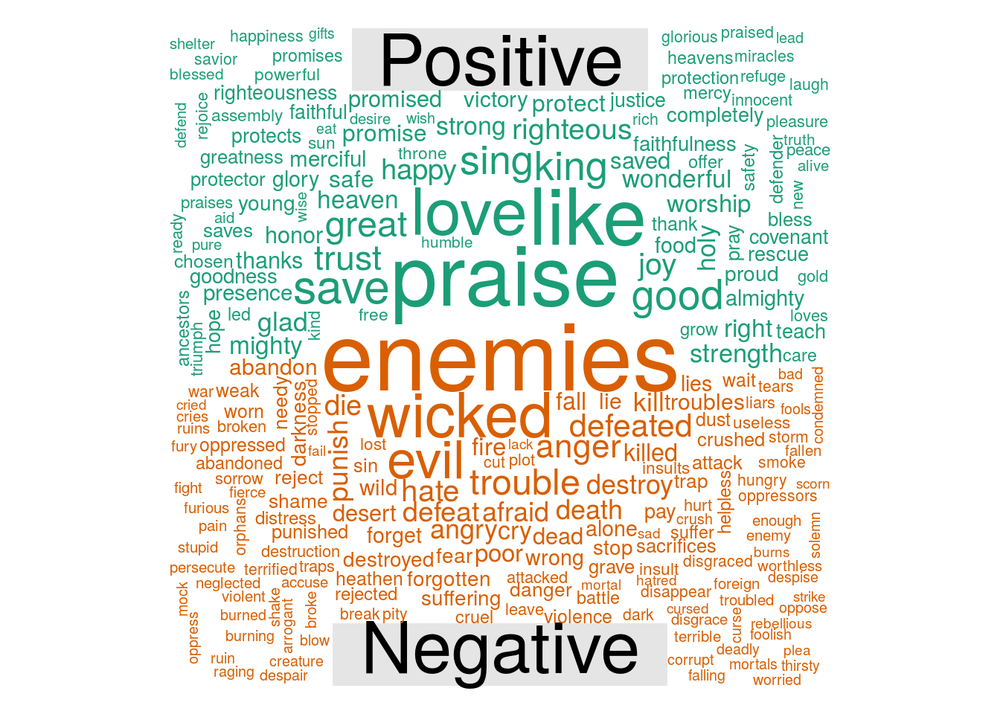
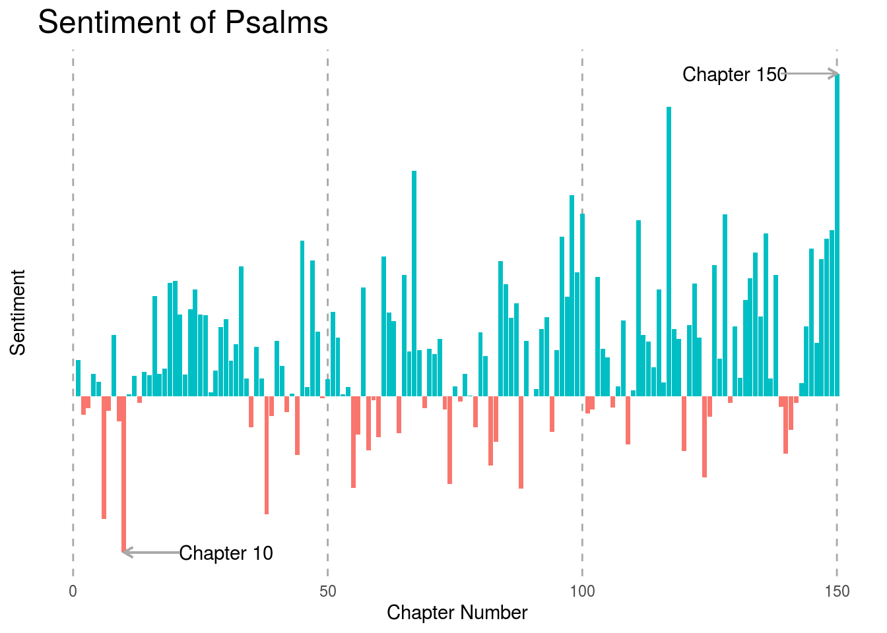
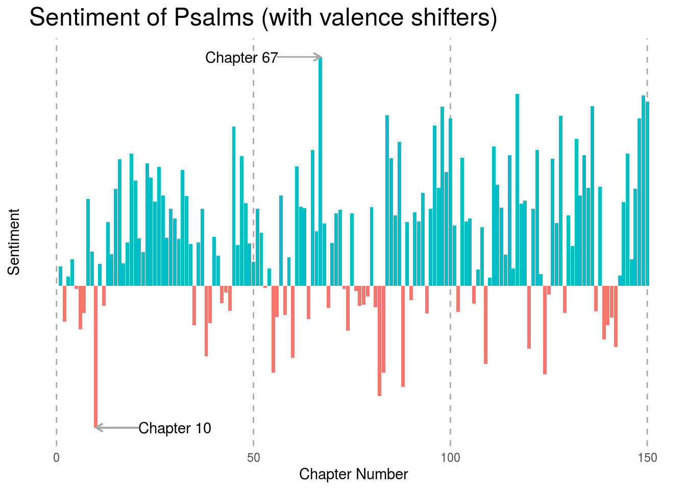

get_chapter <- function(chapter){ #Pull text and do a bit of cleaning:
url <- str_c("https://www.biblegateway.com/passage/?search=Psalms+",
chapter,
"&version=GNT")
html <- read_html(url)
text <- html %>%
html_node(".passage-wrap") %>%
html_text() %>%
str_extract("\\(GNT.{1,}") %>%
str_replace("\\(GNT\\)","") %>%
str_extract("\\d.{1,}") %>%
str_replace_all("\\d{1,}", "") %>%
str_replace_all("\\[\\w{1}\\]","")
}
#Use the function defined above to read all 150 chapters.
chapters <- map_chr(1:150, get_chapter) %>%
tibble::enframe(name = "ch_num", value = "text") Psalms is a book in both the Christian Bible and the Jewish Tanakh. I thought it would be interesting to look at a sentiment analysis of the book. I chose to work with the “Good News Translation” of the bible as it does not have copyright issues like some of the other translations (per the American Bible Society). We’ll use the tidytext and sentimentr R packages to do the analysis. Let’s start by reading data from biblegateway.com (using rvest) and doing a bit of cleaning:
Positive and Negative Word Lexicon
Next, we’ll use the tidytext package to tokenize (i.e. split the text by words) and join our data with a dictionary of sentiment words. For more information about text analysis using tidytext, see Text Mining with R: A Tidy Approach by Julia Silge and David Robinson. tidytext comes with sentiment dictionaries, but I’m going to use the Jockers & Rinker sentiment dictionary from the lexicon package to better compare with a follow-on analysis using the sentimentr package. This dictionary contains positive and negative words and an associated sentiment score in the range [-1, 1]. A value of 1 is the most positive, 0 is neutral, and negative 1 is most negative.
Let’s first look at a comparison word cloud to compare the frequency of the positive and negative words in the book.
#Tokenize and join with sentiment lexicon:
psalms_sentiment_jockers_rinker <- chapters %>%
unnest_tokens(word, text) %>% #tokenize by words
#anti_join(stop_words) %>%
left_join(lexicon::hash_sentiment_jockers_rinker,
by = c("word" = "x"),
drop = FALSE) %>%
mutate(y = replace_na(y, 0))
#Draw the comparison cloud:
psalms_sentiment_jockers_rinker %>%
filter(abs(y) > 0) %>%
mutate(pos = y>0, neg = y<0) %>%
select(-ch_num, -y) %>%
group_by(word, pos, neg) %>%
summarize(cnt = n()) %>%
mutate(Positive = cnt * pos, Negative = cnt * neg) %>%
ungroup %>%
select(word, Positive, Negative) %>%
as.data.frame() %>%
column_to_rownames("word") %>%
comparison.cloud(title.colors = "black")
Sentiment Analysis by Chapter
There is some flexibility in the method that we may choose to compute the sentiment. We could sum the sentiment scores for the words in each chapter, which introduces a relationship between sentiment score and chapter length. Or we could compute the average sentiment over the words in the chapter, either choosing to ignore or include neutral words (i.e. words with score of 0). The inclusion of neutral words in the calculation of the average would dampen the overall sentiment score of the chapter. I think the choice depends on what makes the most sense for each application.
In the interest of better comparing this first calculation to a second calculation using the sentimentr package, I’m going use the mean chapter sentiment (including neutral words). That is, the sentiment for the \(j^{th}\) chapter is
\[S_j = \frac{1}{n_j} \sum_{i=1}^{n_j} s_{ij}\]
where \(n_j\) is the word count for chapter \(j\) and \(s_{ij}\) is the sentiment score for the \(i^{th}\) word in the \(j^{th}\) chapter.
#Compute sentiment:
psalms_sentiment_jockers_rinker %<>%
group_by(ch_num) %>%
summarize(avg_sentiment = mean(y))
We see here that Chapter 150 is the most positive and Chapter 10 is the most negative. In Chapter 10, the psalmist laments about the wicked and asks God to “hear the desire of the afflicted.” Here is a sample:
“His mouth is full of lies and threats; trouble and evil are under his tongue. He lies in wait near the villages; from ambush he murders the innocent. His eyes watch in secret for his victims; like a lion in cover he lies in wait.”
Chapter 150 is a short one of praise to God. Here’s a sample:
“Praise him with trumpets. Praise him with harps and lyres. Praise him with drums and dancing. Praise him with harps and flutes. Praise him with cymbals. Praise him with loud cymbals. Praise the Lord, all living creatures!”
Next let’s take another look at the sentiment using the sentimentr package. It has some nice features such as valence shifters, which are described on the package GitHub page as follows:
“So what are these valence shifters? A negator flips the sign of a polarized word (e.g., ‘I do not like it.’). An amplifier (intensifier) increases the impact of a polarized word (e.g., ‘I really like it.’). A de-amplifier (downtoner) reduces the impact of a polarized word (e.g., ‘I hardly like it.’). An adversative conjunction overrules the previous clause containing a polarized word (e.g., ‘I like it but it’s not worth it.’).”
The sentimentr GitHub page also discusses the equations used to calculate sentiment. With a bit of work we could apply similar valence shifters with the tidytext package, but it’s nice that it’s automated in sentimentr.
Note that by default this package uses the Jockers & Rinker sentiment dictionary, although it can be swapped out with an alternate.
psalms_sentiment_w_valence <- chapters %>%
get_sentences() %$%
sentiment_by(text, by = ch_num)
Now, after taking valence shifters into account, Chapter 67 is the most positive while Chapter 10 is still the most negative. Chapter 67 is a short chapter (only 7 verses), a song written for the director of music. Here is a sample of verses 3 and 4:
“May the peoples praise you, God; may all the peoples praise you. May the nations be glad and sing for joy, for you rule the peoples with equity and guide the nations of the earth.”
Chapter 67 seems to have a similar sentiment as Chapter 150, which we identified in the previous analysis.
Additionally, between the two analyses, Chapter 13 switched from a very slight negative sentiment (-0.0038) to a somewhat positive sentiment (0.1513). This chapter had the largest score change between the two analyses.
Have comments or feedback? Message me on Twitter: DrAmandaRP